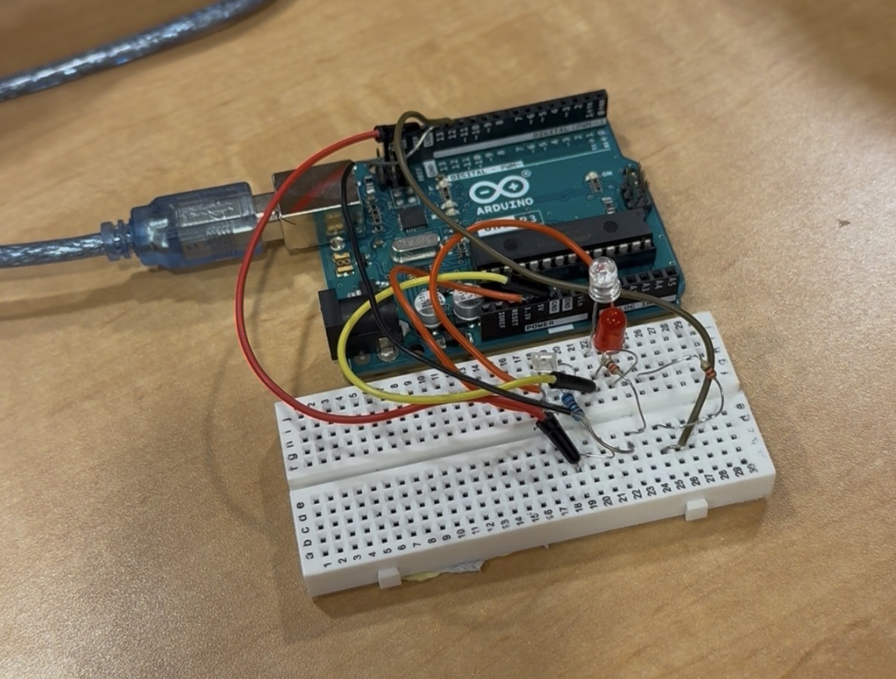
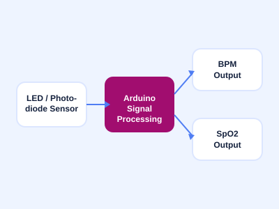

ENGINEERING PROJECT · COMPUTING FOR ENGINEERS
Pulse Oximeter
Simulation
Arduino-Based Vital Signs Monitor

Building a pulse oximeter from an LED sensor and code.
For my Computing for Engineers class, my team and I built a working pulse oximeter simulation using an Arduino and a set of LEDs, rather than a purpose-built medical sensor. The focus of the project was the electrical circuit and the software behind it: reading raw light-absorption data, processing that signal, and turning it into two usable vitals — heart rate (BPM) and blood oxygen saturation (SpO2).
This project is what led me to design the pulse oximeter housing in my CAD work — after getting the electronics working, I wanted to design a compact, ergonomic enclosure for it.

Data Acquisition
LEDs shine through the fingertip and a photodiode reads the changing light absorption as blood volume fluctuates with each heartbeat.
Signal Processing
Arduino code filters and processes the raw readings to isolate the pulsing (AC) component from the steady (DC) baseline.
Vitals Output
The processed signal is converted into a live BPM reading and an SpO2 percentage, calculated from the ratio of the two LED wavelengths.